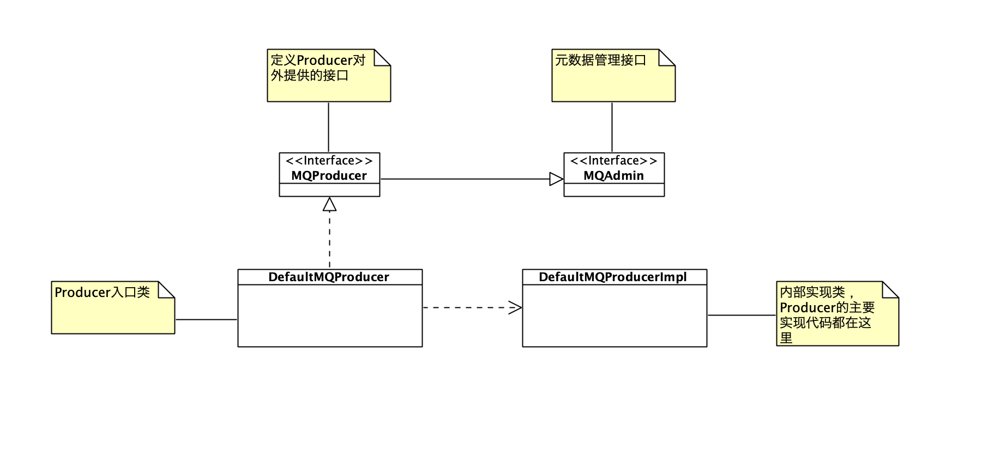

- 00 开篇词 优秀的程序员，你的技术栈中不能只有“增删改查”.md.html
- 00 预习 怎样更好地学习这门课？.md.html
- 01 为什么需要消息队列？.md.html
- 02 该如何选择消息队列？.md.html
- 03 消息模型：主题和队列有什么区别？.md.html
- 04 如何利用事务消息实现分布式事务？.md.html
- 05 如何确保消息不会丢失.md.html
- 06 如何处理消费过程中的重复消息？.md.html
- 07 消息积压了该如何处理？.md.html
- 08 答疑解惑（一） 网关如何接收服务端的秒杀结果？.md.html
- 09 学习开源代码该如何入手？.md.html
- 10 如何使用异步设计提升系统性能？.md.html
- 11 如何实现高性能的异步网络传输？.md.html
- 12 序列化与反序列化：如何通过网络传输结构化的数据？.md.html
- 13 传输协议：应用程序之间对话的语言.md.html
- 14 内存管理：如何避免内存溢出和频繁的垃圾回收？.md.html
- 15 Kafka如何实现高性能IO？.md.html
- 16 缓存策略：如何使用缓存来减少磁盘IO？.md.html
- 17 如何正确使用锁保护共享数据，协调异步线程？.md.html
- 18 如何用硬件同步原语（CAS）替代锁？.md.html
- 19 数据压缩：时间换空间的游戏.md.html
- 20 RocketMQ Producer源码分析：消息生产的实现过程.md.html
- 21 Kafka Consumer源码分析：消息消费的实现过程.md.html
- 22 Kafka和RocketMQ的消息复制实现的差异点在哪？.md.html
- 23 RocketMQ客户端如何在集群中找到正确的节点？.md.html
- 24 Kafka的协调服务ZooKeeper：实现分布式系统的“瑞士军刀”.md.html
- 25 RocketMQ与Kafka中如何实现事务？.md.html
- 26 MQTT协议：如何支持海量的在线IoT设备.md.html
- 27 Pulsar的存储计算分离设计：全新的消息队列设计思路.md.html
- 28 答疑解惑（二）：我的100元哪儿去了？.md.html
- 29 流计算与消息（一）：通过Flink理解流计算的原理.md.html
- 30 流计算与消息（二）：在流计算中使用Kafka链接计算任务.md.html
- 31 动手实现一个简单的RPC框架（一）：原理和程序的结构.md.html
- 32 动手实现一个简单的RPC框架（二）：通信与序列化.md.html
- 33 动手实现一个简单的RPC框架（三）：客户端.md.html
- 34 动手实现一个简单的RPC框架（四）：服务端.md.html
- 35 答疑解惑（三）：主流消息队列都是如何存储消息的？.md.html
- 加餐 JMQ的Broker是如何异步处理消息的？.md.html
- 结束语 程序员如何构建知识体系？.md.html
20 RocketMQ Producer源码分析：消息生产的实现过程
你好，我是李玥。
对于消息队列来说，它最核心的功能就是收发消息。也就是消息生产和消费这两个流程。我们在之前的课程中提到了消息队列一些常见问题，比如，“如何保证消息不会丢失？”“为什么会收到重复消息？”“消费时为什么要先执行消费业务逻辑再确认消费？”，针对这些问题，我讲过它们的实现原理，这些最终落地到代码上，都包含在这一收一发两个流程中。
在接下来的两节课中，我会带你一起通过分析源码的方式，详细学习一下这两个流程到底是如何实现的。你在日常使用消息队列的时候，遇到的大部分问题，更多的是跟 Producer 和 Consumer，也就是消息队列的客户端，关联更紧密。搞清楚客户端的实现原理和代码中的细节，将对你日后使用消息队列时进行问题排查有非常大的帮助。所以，我们这两节课的重点，也将放在分析客户端的源代码上。
秉着先易后难的原则，我们选择代码风格比较简明易懂的 RocketMQ 作为分析对象。一起分析 RocketMQ 的 Producer 的源代码，学习消息生产的实现过程。
在分析源代码的过程中，我们的首要目的就是搞清楚功能的实现原理，另外，最好能有敏锐的嗅觉，善于发现代码中优秀的设计和巧妙构思，学习、总结并记住这些方法。在日常开发中，再遇到类似场景，你就可以直接拿来使用。
我们使用当前最新的 release 版本 release-4.5.1 进行分析，使用 Git 在 GitHub 上直接下载源码到本地：
git clone [email protected]:apache/rocketmq.git
cd rocketmq
git checkout release-4.5.1
客户端是一个单独的 Module，在 rocketmq/client 目录中。
从单元测试看 Producer API 的使用
在专栏之前的课程《[09 | 学习开源代码该如何入手？]》中我和你讲过，不建议你从 main() 方法入手去分析源码，而是带着问题去分析。我们本节课的问题是非常清晰的，就是要搞清楚 Producer 是如何发消息的。带着这个问题，接下来我们该如何分析源码呢？
我的建议是，先看一下单元测试用例。因为，一般单元测试中，每一个用例就是测试代码中的一个局部或者说是一个小流程。那对于一些比较完善的开源软件，它们的单元测试覆盖率都非常高，很容易找到我们关心的那个流程所对应的测试用例。我们的源码分析，就可以从这些测试用例入手，一步一步跟踪其方法调用链路，理清实现过程。
首先我们先分析一下 RocketMQ 客户端的单元测试，看看 Producer 提供哪些 API，更重要的是了解这些 API 应该如何使用。
Producer 的所有测试用例都在同一个测试类"org.apache.rocketmq.client.producer.DefaultMQProducerTest"中，看一下这个测试类中的所有单元测试方法，大致可以了解到 Producer 的主要功能。
这个测试类的主要测试方法如下：
init terminate testSendMessage_ZeroMessage testSendMessage_NoNameSrv testSendMessage_NoRoute testSendMessageSync_Success testSendMessageSync_WithBodyCompressed testSendMessageAsync_Success testSendMessageAsync testSendMessageAsync_BodyCompressed testSendMessageSync_SuccessWithHook
其中 init 和 terminate 是测试开始初始化和测试结束销毁时需要执行的代码，其他以 testSendMessage 开头的方法都是在各种情况和各种场景下发送消息的测试用例，通过这些用例的名字，你可以大致看出测试的功能。
比如，testSendMessageSync 和 testSendMessageAsync 分别是测试同步发送和异步发送的用例，testSendMessageSync_WithBodyCompressed 是压缩消息发送的测试用例，等等。
像 RocketMQ 这种开源项目，前期花费大量时间去编写测试用例，看似浪费时间，实际上会节省非常多后期联调测试、集成测试、以及上线后出现问题解决问题的时间，并且能够有效降低线上故障的概率，总体来说是非常划算的。强烈建议你在日常进行开发的过程中，也多写一些测试用例，尽量把单元测试的覆盖率做到 50% 以上。
RockectMQ 的 Producer 入口类为“org.apache.rocketmq.client.producer.DefaultMQProducer”，大致浏览一下代码和类的继承关系，我整理出 Producer 相关的几个核心类和接口如下：

这里面 RocketMQ 使用了一个设计模式：门面模式（Facade Pattern）。
门面模式主要的作用是给客户端提供了一个可以访问系统的接口，隐藏系统内部的复杂性。
接口 MQProducer 就是这个模式中的门面，客户端只要使用这个接口就可以访问 Producer 实现消息发送的相关功能，从使用层面上来说，不必再与其他复杂的实现类打交道了。
类 DefaultMQProducer 实现了接口 MQProducer，它里面的方法实现大多没有任何的业务逻辑，只是封装了对其他实现类的方法调用，也可以理解为是门面的一部分。Producer 的大部分业务逻辑的实现都在类 DefaultMQProducerImpl 中，这个类我们会在后面重点分析其实现。
有的时候，我们的实现分散在很多的内部类中，不方便用接口来对外提供服务，你就可以仿照 RocketMQ 的这种方式，使用门面模式来隐藏内部实现，对外提供服务。
接口 MQAdmin 定义了一些元数据管理的方法，在消息发送过程中会用到。
启动过程
通过单元测试中的代码可以看到，在 init() 和 terminate() 这两个测试方法中，分别执行了 Producer 的 start 和 shutdown 方法，说明在 RocketMQ 中，Producer 是一个有状态的服务，在发送消息之前需要先启动 Producer。这个启动过程，实际上就是为了发消息做的准备工作，所以，在分析发消息流程之前，我们需要先理清 Producer 中维护了哪些状态，在启动过程中，Producer 都做了哪些初始化的工作。有了这个基础才能分析其发消息的实现流程。
首先从测试用例的方法 init() 入手：
@Before
public void init() throws Exception {
String producerGroupTemp = producerGroupPrefix + System.currentTimeMillis();
producer = new DefaultMQProducer(producerGroupTemp);
producer.setNamesrvAddr("127.0.0.1:9876");
producer.setCompressMsgBodyOverHowmuch(16);
// 省略构造测试消息的代码
producer.start();
// 省略用于测试构造 mock 的代码
}
这段初始化代码的逻辑非常简单，就是创建了一个 DefaultMQProducer 的实例，为它初始化一些参数，然后调用 start 方法启动它。接下来我们跟进 start 方法的实现，继续分析其初始化过程。
DefaultMQProducer#start() 方法中直接调用了 DefaultMQProducerImpl#start() 方法，我们直接来看这个方法的代码：
public void start(final boolean startFactory) throws MQClientException {
switch (this.serviceState) {
case CREATE_JUST:
this.serviceState = ServiceState.START_FAILED;
// 省略参数检查和异常情况处理的代码
// 获取 MQClientInstance 的实例 mQClientFactory，没有则自动创建新的实例
this.mQClientFactory = MQClientManager.getInstance().getAndCreateMQClientInstance(this.defaultMQProducer, rpcHook);
// 在 mQClientFactory 中注册自己
boolean registerOK = mQClientFactory.registerProducer(this.defaultMQProducer.getProducerGroup(), this);
// 省略异常处理代码
// 启动 mQClientFactory
if (startFactory) {
mQClientFactory.start();
}
this.serviceState = ServiceState.RUNNING;
break;
case RUNNING:
case START_FAILED:
case SHUTDOWN_ALREADY:
// 省略异常处理代码
default:
break;
}
// 给所有 Broker 发送心跳
this.mQClientFactory.sendHeartbeatToAllBrokerWithLock();
}
这里面，RocketMQ 使用一个成员变量 serviceState 来记录和管理自身的服务状态，这实际上是状态模式 (State Pattern) 这种设计模式的变种实现。
状态模式允许一个对象在其内部状态改变时改变它的行为，对象看起来就像是改变了它的类。
与标准的状态模式不同的是，它没有使用状态子类，而是使用分支流程（switch-case）来实现不同状态下的不同行为，在管理比较简单的状态时，使用这种设计会让代码更加简洁。这种模式非常广泛地用于管理有状态的类，推荐你在日常开发中使用。
在设计状态的时候，有两个要点是需要注意的，第一是，不仅要设计正常的状态，还要设计中间状态和异常状态，否则，一旦系统出现异常，你的状态就不准确了，你也就很难处理这种异常状态。比如在这段代码中，RUNNING 和 SHUTDOWN_ALREADY 是正常状态，CREATE_JUST 是一个中间状态，START_FAILED 是一个异常状态。
第二个要点是，将这些状态之间的转换路径考虑清楚，并在进行状态转换的时候，检查上一个状态是否能转换到下一个状态。比如，在这里，只有处于 CREATE_JUST 状态才能转换为 RUNNING 状态，这样就可以确保这个服务是一次性的，只能启动一次。从而避免了多次启动服务而导致的各种问题。
接下来看一下启动过程的实现：
- 通过一个单例模式（Singleton Pattern）的 MQClientManager 获取 MQClientInstance 的实例 mQClientFactory，没有则自动创建新的实例；
- 在 mQClientFactory 中注册自己；
- 启动 mQClientFactory；
- 给所有 Broker 发送心跳。
这里面又使用了一个最简单的设计模式：单例模式。我们在这儿给出单例模式的定义，不再详细说明了，不会的同学需要自我反省一下，然后赶紧去复习设计模式基础去。
单例模式涉及一个单一的类，该类负责创建自己的对象，同时确保只有单个对象被创建。这个类提供了一种访问其唯一的对象的方式，可以直接访问，不需要实例化该类的对象。
其中实例 mQClientFactory 对应的类 MQClientInstance 是 RocketMQ 客户端中的顶层类，大多数情况下，可以简单地理解为每个客户端对应类 MQClientInstance 的一个实例。这个实例维护着客户端的大部分状态信息，以及所有的 Producer、Consumer 和各种服务的实例，想要学习客户端整体结构的同学可以从分析这个类入手，逐步细化分析下去。
我们进一步分析一下 MQClientInstance#start() 中的代码：
// 启动请求响应通道
this.mQClientAPIImpl.start();
// 启动各种定时任务
this.startScheduledTask();
// 启动拉消息服务
this.pullMessageService.start();
// 启动 Rebalance 服务
this.rebalanceService.start();
// 启动 Producer 服务
this.defaultMQProducer.getDefaultMQProducerImpl().start(false);
这一部分代码的注释比较清楚，流程是这样的：
- 启动实例 mQClientAPIImpl，其中 mQClientAPIImpl 是类 MQClientAPIImpl 的实例，封装了客户端与 Broker 通信的方法；
- 启动各种定时任务，包括与 Broker 之间的定时心跳，定时与 NameServer 同步数据等任务；
- 启动拉取消息服务；
- 启动 Rebalance 服务；
- 启动默认的 Producer 服务。
以上是 Producer 的启动流程。这里面有几个重要的类，你需要清楚它们的各自的职责。后续你在使用 RocketMQ 时，如果遇到问题需要调试代码，了解这几个重要类的职责会对你有非常大的帮助。
- DefaultMQProducerImpl：Producer 的内部实现类，大部分 Producer 的业务逻辑，也就是发消息的逻辑，都在这个类中。
- MQClientInstance：这个类中封装了客户端一些通用的业务逻辑，无论是 Producer 还是 Consumer，最终需要与服务端交互时，都需要调用这个类中的方法；
- MQClientAPIImpl：这个类中封装了客户端服务端的 RPC，对调用者隐藏了真正网络通信部分的具体实现；
- NettyRemotingClient：RocketMQ 各进程之间网络通信的底层实现类。
消息发送过程
接下来我们一起分析 Producer 发送消息的流程。
在 Producer 的接口 MQProducer 中，定义了 19 个不同参数的发消息的方法，按照发送方式不同可以分成三类：
- 单向发送（Oneway）：发送消息后立即返回，不处理响应，不关心是否发送成功；
- 同步发送（Sync）：发送消息后等待响应；
- 异步发送（Async）：发送消息后立即返回，在提供的回调方法中处理响应。
这三类发送实现基本上是相同的，异步发送稍微有一点儿区别，我们看一下异步发送的实现方法"DefaultMQProducerImpl#send()"（对应源码中的 1132 行）：
@Deprecated
public void send(final Message msg, final MessageQueueSelector selector, final Object arg, final SendCallback sendCallback, final long timeout)
throws MQClientException, RemotingException, InterruptedException {
final long beginStartTime = System.currentTimeMillis();
ExecutorService executor = this.getAsyncSenderExecutor();
try {
executor.submit(new Runnable() {
@Override
public void run() {
long costTime = System.currentTimeMillis() - beginStartTime;
if (timeout > costTime) {
try {
try {
sendSelectImpl(msg, selector, arg, CommunicationMode.ASYNC, sendCallback,
timeout - costTime);
} catch (MQBrokerException e) {
throw new MQClientException("unknownn exception", e);
}
} catch (Exception e) {
sendCallback.onException(e);
}
} else {
sendCallback.onException(new RemotingTooMuchRequestException("call timeout"));
}
}
});
} catch (RejectedExecutionException e) {
throw new MQClientException("exector rejected ", e);
}
}
我们可以看到，RocketMQ 使用了一个 ExecutorService 来实现异步发送：使用 asyncSenderExecutor 的线程池，异步调用方法 sendSelectImpl()，继续发送消息的后续工作，当前线程把发送任务提交给 asyncSenderExecutor 就可以返回了。单向发送和同步发送的实现则是直接在当前线程中调用方法 sendSelectImpl()。
我们来继续看方法 sendSelectImpl() 的实现：
// 省略部分代码
MessageQueue mq = null;
// 选择将消息发送到哪个队列（Queue）中
try {
List<MessageQueue> messageQueueList =
mQClientFactory.getMQAdminImpl().parsePublishMessageQueues(topicPublishInfo.getMessageQueueList());
Message userMessage = MessageAccessor.cloneMessage(msg);
String userTopic = NamespaceUtil.withoutNamespace(userMessage.getTopic(), mQClientFactory.getClientConfig().getNamespace());
userMessage.setTopic(userTopic);
mq = mQClientFactory.getClientConfig().queueWithNamespace(selector.select(messageQueueList, userMessage, arg));
} catch (Throwable e) {
throw new MQClientException("select message queue throwed exception.", e);
}
// 省略部分代码
// 发送消息
if (mq != null) {
return this.sendKernelImpl(msg, mq, communicationMode, sendCallback, null, timeout - costTime);
} else {
throw new MQClientException("select message queue return null.", null);
}
// 省略部分代码
方法 sendSelectImpl() 中主要的功能就是选定要发送的队列，然后调用方法 sendKernelImpl() 发送消息。
选择哪个队列发送由 MessageQueueSelector#select 方法决定。在这里 RocketMQ 使用了策略模式（Strategy Pattern），来解决不同场景下需要使用不同的队列选择算法问题。
策略模式：定义一系列算法，将每一个算法封装起来，并让它们可以相互替换。策略模式让算法独立于使用它的客户而变化。
RocketMQ 提供了很多 MessageQueueSelector 的实现，例如随机选择策略，哈希选择策略和同机房选择策略等，如果需要，你也可以自己实现选择策略。之前我们的课程中提到过，如果要保证相同 key 消息的严格顺序，你需要使用哈希选择策略，或者提供一个自己实现的选择策略。
接下来我们再看一下方法 sendKernelImpl()。这个方法的代码非常多，大约有 200 行，但逻辑比较简单，主要功能就是构建发送消息的头 RequestHeader 和上下文 SendMessageContext，然后调用方法 MQClientAPIImpl#sendMessage()，将消息发送给队列所在的 Broker。
至此，消息被发送给远程调用的封装类 MQClientAPIImpl，完成后续序列化和网络传输等步骤。
可以看到，RocketMQ 的 Producer 整个发消息的流程，无论是同步发送还是异步发送，都统一到了同一个流程中。包括异步发送消息的实现，实际上也是通过一个线程池，在异步线程执行的调用和同步发送相同的底层方法来实现的。
在底层方法的代码中，依靠方法的一个参数来区分同步还是异步发送。这样实现的好处是，整个流程是统一的，很多同步异步共同的逻辑，代码可以复用，并且代码结构清晰简单，便于维护。
使用同步发送的时候，当前线程会阻塞等待服务端的响应，直到收到响应或者超时方法才会返回，所以在业务代码调用同步发送的时候，只要返回成功，消息就一定发送成功了。异步发送的时候，发送的逻辑都是在 Executor 的异步线程中执行的，所以不会阻塞当前线程，当服务端返回响应或者超时之后，Producer 会调用 Callback 方法来给业务代码返回结果。业务代码需要在 Callback 中来判断发送结果。这和我们在之前的课程《[05 | 如何确保消息不会丢失？]》讲到的发送流程是完全一样的。
小结
这节课我带你分析了 RocketMQ 客户端消息生产的实现过程，包括 Producer 初始化和发送消息的主流程。Producer 中包含的几个核心的服务都是有状态的，在 Producer 启动时，在 MQClientInstance 这个类中来统一来启动。在发送消息的流程中，RocketMQ 分了三种发送方式：单向、同步和异步，这三种发送方式对应的发送流程基本是相同的，同步和异步发送是由已经封装好的 MQClientAPIImpl 类来分别实现的。
对于我们在分析代码中提到的几个重要的业务逻辑实现类，你最好能记住这几个类和它的功能，包括 ：DefaultMQProducerImpl 封装了大部分 Producer 的业务逻辑，MQClientInstance 封装了客户端一些通用的业务逻辑，MQClientAPIImpl 封装了客户端与服务端的 RPC，NettyRemotingClient 实现了底层网络通信。
我在课程中，只能带你把主干流程分析清楚，但是很多细节并没有涉及，课后请你一定要按照流程把源代码仔细看一遍，仔细消化一下没有提及到的分支流程，将这两个流程绘制成详细的流程图或者时序图。
分析过程中提到的几个设计模式，是非常实用且常用的设计模式，希望你能充分理解并熟练运用。